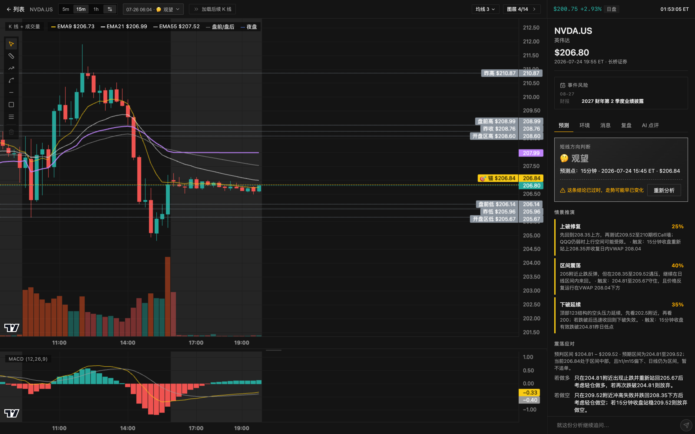

KANSOKU/TAPE
NVDA +2.92%
MU −5.90%
TSLA +0.76%
SPY +0.71%
QQQ +0.64%
AMD −1.90%
US CLOSE 07-31
Local-first · macOS
KANSOKU
観測
AI 看盘，句句有据
判断归档后不许改口，按命中率记分 — 全在你自己的 Mac 上
KANSOKU 観測 — NVDA.US · 短线多周期
